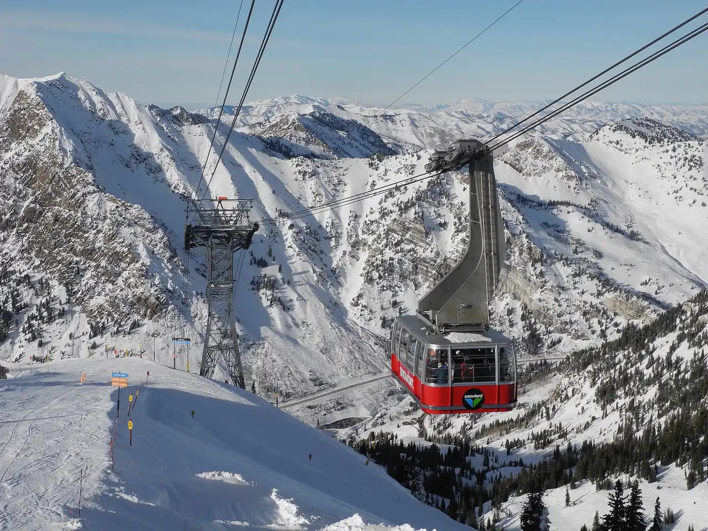

Snowbird, Little Cottonwood Canyon, Utah · Ski conditions
Snowbird Conditions and Webcams Today
Snowbird's webcams and kid facts: kids 6 and under ski free, childcare from 6 weeks, lessons from age 3. It's 6 miles up Little Cottonwood Canyon.
Family of 4: from about $624 for a day of lift tickets
2 adults + 2 kids 7-12, starting-at online price (2+ weeks ahead); weekend, peak and holiday dates likely cost more; tax not stated. Kids 6 and under free (need a ticket): from $390. Our estimate. Read Nov 17; prices below.
Researched with AI (Miles Rowan) · sources linked and dated · How we check
Snowbird's own status
Not open yetOpens Fri, Nov 27 (tentative) (Snowbird's opening-day page, read Nov 17). Live lifts: Snowbird's snow report.
Our webcam read
No cam read from us yet. Cam reads show here only when a recent one has passed a separate automated accuracy check.

Plan the day with kids
- Season and hours: Snowbird's opening-day page says lifts open Fri, Nov 27, 2026, tentatively and conditions permitting, 9am to 4pm. Its page summary says Nov 26. No closing date posted.
- Kids' group lessons start Dec 12: Group lessons run Dec 12, 2026 to Apr 11, 2027, conditions permitting; private lessons from Nov 26. So there are no kids' group lessons on opening weekend.
- Childcare: Superior Childcare in The Cliff Lodge, ages 6 weeks to 12 years, 8:30am to 4:30pm. Book 48 hours ahead for guaranteed care. No rates posted.
- Lessons, ages 3 to 4: Chickadee: 2 hours with an instructor, lunch and snacks, Chickadee lift only. Kids must be fully potty trained (no diapers or pull-ups).
- Lessons, ages 5 to 15: Youth groups, full day with lunch and a lift ticket; rentals extra. The family guide still lists a Kinderbirds group for 5 to 6.
- Where kids meet: Chickadee check-in 8:30 to 9:30am at the Lesson Center (Snowbird Center Level 2), pick-up by 3pm. Youth groups meet 9:15am at Chickadee Bowl, end 3pm.
- Little kids ski free: Kids 6 and under ski free but need a ticket to load the lift.
- Parking: Most parking is free, first come, first served. Paid reservations are optional; paid lots open as free parking at 1pm. Carpools of 3 or more get signed spots. No overnight parking except lodging guests.
Ticket, lesson and parking prices on Snowbird's pages, read Nov 17:
- Family of 4 lift tickets, one full day (2 adults 13-64, 2 kids 7-12, bought online ahead): from $624 (our sum of the lowest starting-at prices)
- Family of 4 with 2 kids 6 and under, one full day: from $390 (our sum: kids free)
- Full-day ticket, starting at: adult 13-64 / youth 7-12: $195 / $117 (half day $166 / $99; Chickadee lift only $42)
- Youth lesson, ages 5-15, full day with lunch and lift ticket: $300 off-peak, $330 peak
- Chickadee lesson, ages 3-4, 2 hours with an instructor, lunch, Chickadee lift ticket: $330 off-peak, $363 peak
- Paid parking reservation (optional): from $30, by date and lot
From Snowbird's winter lift ticket, youth lesson and parking pages. Ticket prices are starting-at prices for buying online 2 or more weeks ahead (up to 15% less than the window, whose prices aren't listed) and rise with demand. Peak dates include every Fri-Sun from Dec 11 to Apr 4, plus Dec 21-23 and Feb 16-17; holidays are Dec 24-Jan 1, Jan 16-17 and Feb 13-15. So a weekend day likely costs more than our sums. No tax line on the page. Lesson peak dates: Dec 21-Jan 4, Feb 11-21, Mar 11-28; per child not stated; later pick-up to 4:30pm adds $65. Tickets are non-refundable.
Lift tickets and lessons: Prices change by date and demand, and the page lists only starting-at prices, so check live for your day. See Snowbird lift tickets.
From Snowbird guiding and lessons policies, Snowbird parking, Snowbird families guide, Snowbird: New to the Bird?, Snowbird youth ski and snowboard lessons, Snowbird childcare, Snowbird getting here and Snowbird Opening Day 2026-27, read Nov 17.
Getting there from Salt Lake City
- Car: Snowbird is 6 miles up Little Cottonwood Canyon on SR-210, the only road in. Its pages give no drive time from the airport or downtown and say to expect delays on holidays, weekends and powder days.
- Snow days: when it's snowing, the Traction Law will almost certainly be in effect on SR-210, so every vehicle needs traction devices. UDOT sometimes closes the road for avalanche control.
- Bus and shuttle: the UTA Ski Bus is listed (routes and fares not on Snowbird's page); the Alta/Snowbird Shuttle offers airport and lodging transportation (no fares posted).
- Tickets: pick-up boxes at The Cliff Lodge, Creekside and Snowbird Center print tickets bought online.
If the snow is thin
- Lesson refunds aren't given for weather or snow conditions. Changes and cancellations must be 48 hours or more ahead, with a processing fee. Lift tickets are non-refundable and non-transferable; for date changes, Snowbird says to contact its ticket office.
- If avalanche control delays the road or lifts, the lesson policy says the school will "make every effort to accommodate" missed lessons.
- Off the slopes: the Aerial Tram to Hidden Peak (kids not ready to ski down can ride back), The Cliff Lodge game room and the Center Sundries shop. Pools are for lodging guests only. No tubing, sledding or skating listed; no hours or prices posted.
From Snowbird guiding and lessons policies and Snowbird lift tickets and Snowbird families guide, read Nov 17.
Cam by cam
The 7 Snowbird cam views our reader uses (6 names: two summit views share one), in our own descriptive words (see Snowbird's own cam page, as listed in our cam feed Nov 17): Snowbird snow stake, Snowbird slope view, Snowbird chairlift slope, Snowbird upper mountain lift line, Summit ridge panorama, Snowbird summit ridge view. Once our reads start, each cam's last read time shows here.
How we read the cams: a program looks at Snowbird's public webcam pictures and notes only what a picture can show: fresh snow, snow cover, snowmaking, moving lifts, how busy the base looks, visibility and the snow stake. Each read shows its time; after 90 minutes it is marked older, after 6 hours it is hidden. We never say whether terrain is safe, icy, groomed or open; Snowbird's own report decides that. We don't show the cam pictures or count people.
Sources: Snowbird webcams · Snowbird Opening Day 2026-27 · Snowbird youth ski and snowboard lessons · Snowbird childcare · Snowbird getting here · Snowbird guiding and lessons policies · Snowbird parking · Snowbird families guide · Snowbird: New to the Bird? (read Nov 17). We haven't skied Snowbird.